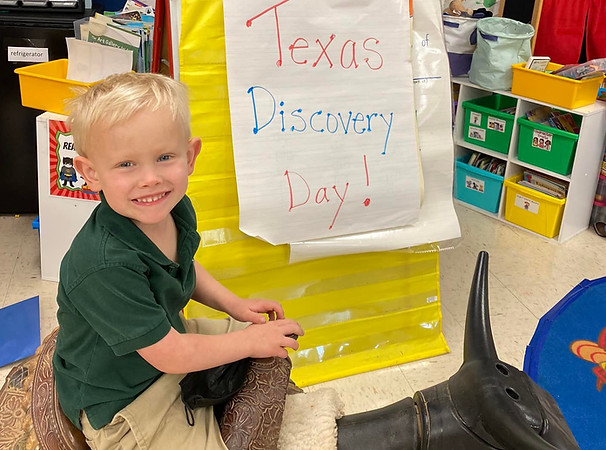
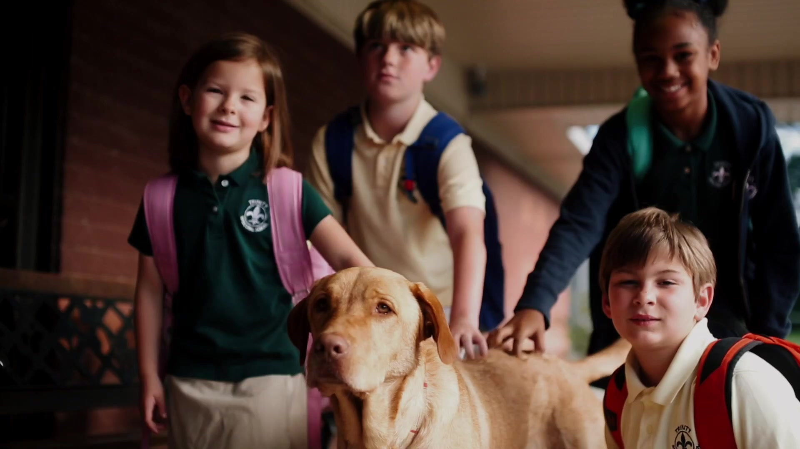
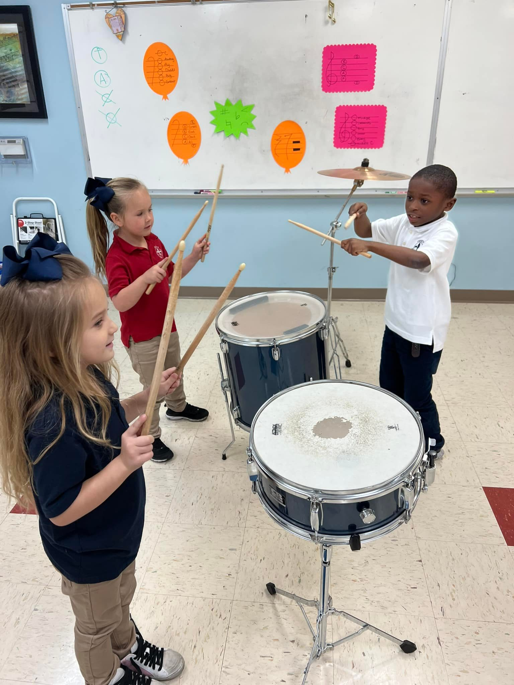

Ages 3 & 4
Preschool
Early learning, creativity, and friendship in a Christian environment, with reading, math, art, music, and play.
Learn about preschoolPreschool through eighth grade · Marshall, Texas
A strong academic foundation. A caring Christian community. A place for your child to learn, grow, and belong.
Welcoming families since 1954

Faith at the heart of learning
is to educate and develop the whole individual in mind, body, and spirit in keeping with the love and teaching of Jesus Christ, our Lord and Savior.
Trinity brings academics, the arts, athletics, and spiritual growth together in a supportive school community.
Get to know TrinityA foundation for every stage

Ages 3 & 4
Early learning, creativity, and friendship in a Christian environment, with reading, math, art, music, and play.
Learn about preschool
Kindergarten – Grade 8
Challenging academics, individual attention, fine arts, and competitive sports, grounded in Christian values.
Learn about K–8After-school care is available until 5:30 p.m. for both programs.
Accelerated Reader
Follow our students’ monthly reading progress in books, words, and average reading time.
View reading tracker
Live totals are unavailable. Showing the October 4, 2026 snapshot.
For new and returning families
Find enrollment information, everyday resources, and the people who can help.
Come get to know us
Meet our teachers, explore our classrooms, and ask your questions on a private school tour.